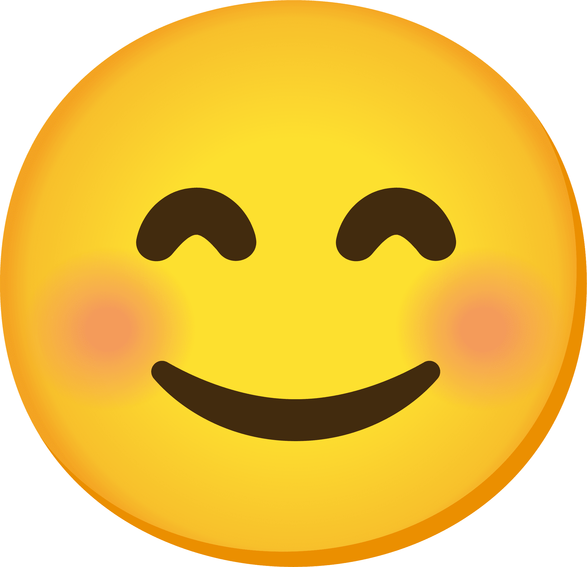

Réalisations
Sur cette page vous trouverez mes différentes réalisations, professionnelles et personnelles.
Parcours professionnel

Mars 2026
Disponible
Depuis Mars, je suis disponible pour de nouvelles aventures, mon précédent CDD ayant
pris fin. Je profite de ce temps libre pour me ressourcer, étendre mon éventail de
compétences avec des formations, travailler sur des projets personnels et trouver de
nouvelles opportunités.
mes projets personnels →
mes projets personnels →

Novembre 2023
DeMETeRE: Lead Développeur VR
Le projet DeMETeRE de
l'Université de Reims-Champagne-Ardenne visait à innover l'enseignement
supérieur en incorporant les technologies emmergeants comme la réalité virtuelle au sein
des formations. Mon rôle au sein de DeMETeRE a été précurseur pour la dizaine de
simulations pédagogiques 3D en temps réél que nous avons développées en interne. En tant
que premier développeur à avoir intégré l'équipe, j'ai créé mon propre projet en
autonomie qui a servi de base pour les projets suivants, ainsi que les relations avec
les partenaires.
en savoir plus →
en savoir plus →
Février 2023
ENPC-Ediser: Référent technique Unreal Engine
J'ai rejoint ENPC-Ediser à Marseille pour aider l'équipe de développement du simulateur
de conduite à transitionner de leur moteur fait-maison vieillissant, vers Unreal Engine
5. Mon rôle a été de documenter un pipeline de production graphique, de transmettre les
"best-practices" du moteur, les différentes techniques d'optimisation, etc...
en savoir plus →
en savoir plus →

Aout 2022
Gambi-M: Stagiaire développeur VR
J'ai fait mon stage de fin d'études chez Gambi-M dans le Gard. J'ai d'abord réalisé un
travail de recherche d'outils d'optimisation 3D et de tesselation de nuage de points.
Par la suite, j'ai eu l'occasion de créer un projet "Proof of Concept" en autonomie en
réalité virtuelle sur Unity pour un client, et à la fin de mon stage, j'ai expérimenté
la réalité augmentée.
en savoir plus →
en savoir plus →

Septembre 2018
Creajeux: Étudiant programmeur JV
En 2022, après 4 années d'études, j'ai obtenu mon certificat RNCP niveau 6 chez l'école
Creajeux à Nîmes où j'ai appris le développement de jeux vidéo, spécialité
programmation.
mes projets étudiants →
mes projets étudiants →